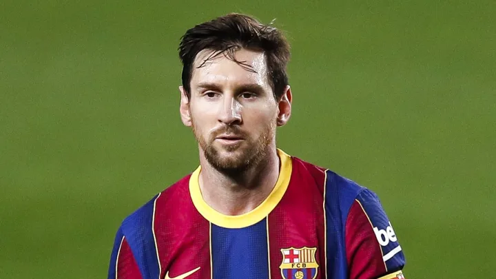

My favourite Player
 critiano Ronaldo
critiano Ronaldo

My favourite hobby is playing football. I play football when I am free. I started to play football when I was seven. I was interested in it at that time because it was exciting and it could make me healthy. At the first time, my football coach taught me how to do play football. I felt excited at that time. I like my hobby because it is exciting. It is also good for my health because it can exercise my body. I practise playing football for two hours every Saturday and fifteen minutes on Sundays. I play football with my classmates at school and my dad and uncles at the church. I hope I can be good at playing football and have a competition for my school in the future
critiano Ronaldo